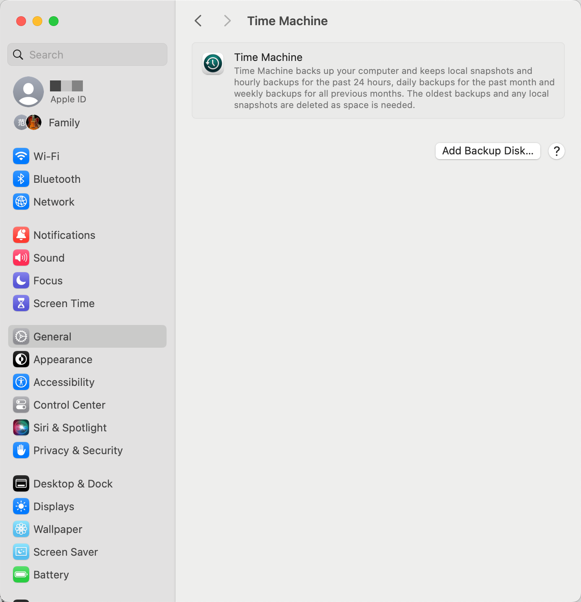
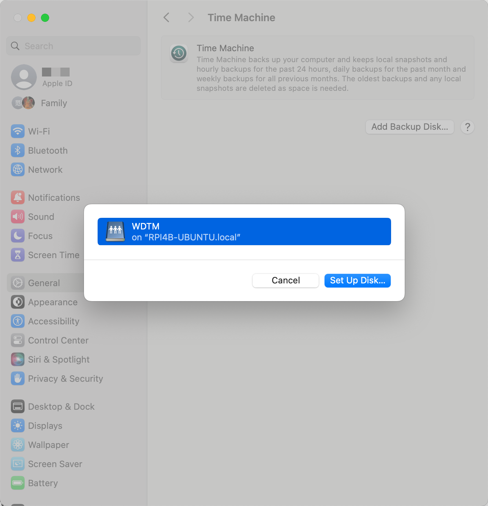
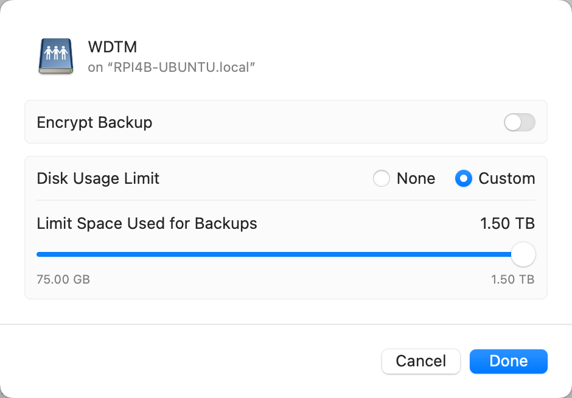
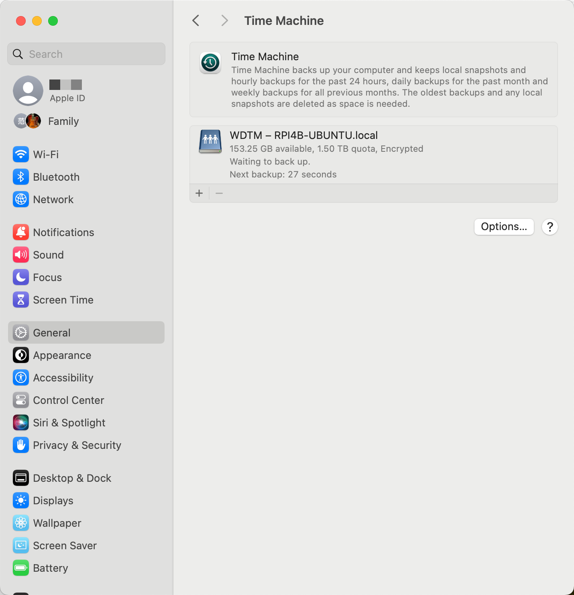

rpi4b-ubuntu外挂硬盘配置samba共享服务
本文梳理了为树莓派 RPI4B/Ubuntu 外挂硬盘配置 samba 局域网共享服务，并将其中一个分区作为 macOS TM 备份分区，实现局域网无线备份。
disk info#
2T 的 WD 硬盘之前格式化为 macExt 格式，其中 1.5T 的 sda2 为 macOS 备份分区，0.5T 的 sda3 为普通分区。
可使用 hdparm 命令获取或设置硬盘信息（get/set SATA/IDE device parameters），参考 Master the Linux 'hdparm' Command: A Comprehensive Guide。
也可使用 udev/udevadm 命令管理配置和查看设备相关信息：
lsblk#
$ lsblk
NAME MAJ:MIN RM SIZE RO TYPE MOUNTPOINTS
loop0 7:0 0 59.7M 1 loop /snap/core20/2186
loop1 7:1 0 59M 1 loop /snap/core20/1638
loop2 7:2 0 69.2M 1 loop /snap/core22/1125
loop3 7:3 0 131.9M 1 loop /snap/lxd/23893
loop4 7:4 0 134.1M 1 loop /snap/lxd/27054
loop5 7:5 0 34M 1 loop /snap/snapd/21185
loop6 7:6 0 35.2M 1 loop /snap/snapd/20674
sda 8:0 0 1.8T 0 disk
├─sda1 8:1 0 200M 0 part
├─sda2 8:2 0 1.4T 0 part
└─sda3 8:3 0 465.6G 0 part
mmcblk0 179:0 0 59.5G 0 disk
├─mmcblk0p1 179:1 0 256M 0 part /boot/firmware
└─mmcblk0p2 179:2 0 59.2G 0 part /
blkid
blkid - locate/print block device attributes
执行 sudo blkid 可以查看硬盘块设备 id 信息，包括 LABEL、UUID 和 TYPE（文件系统类型）。
fdisk#
fdisk - manipulate disk partition table
-l/--list: List the partition tables for the specified devices and then exit.
$ sudo fdisk -l
...
Device Start End Sectors Size Type
/dev/sda1 40 409639 409600 200M EFI System
/dev/sda2 409640 2930008111 2929598472 1.4T Apple HFS/HFS+
/dev/sda3 2930270256 3906701271 976431016 465.6G Apple HFS/HFS+
mount disk#
关于 mount 命令用法，参考 mount - mount a filesystem。
创建挂载点目录：
修改挂载点目录的所有人为当前用户（组）：
$ sudo chown pifan:ubuntu /media/WDHD
$ ls -l /media/
total 4
drwxr-xr-x 2 pifan ubuntu 4096 Apr 7 03:22 WDHD
挂载外接硬盘的 sda3 分区：
uid/gid
执行 id 命令可查看当前用户的 uid/gid。
mount 需指定和 mkdir 创建的挂载点目录一致的 uid/gid。
如不指定，默认加载 uid/gid=99，无写权限，需要 chmod 或 chown。
执行 df（report file system space usage）命令查看挂载的文件设备使用情况：
$ df -hT
Filesystem Type Size Used Avail Use% Mounted on
tmpfs tmpfs 781M 5.7M 776M 1% /run
/dev/mmcblk0p2 ext4 59G 14G 43G 25% /
tmpfs tmpfs 3.9G 0 3.9G 0% /dev/shm
tmpfs tmpfs 5.0M 0 5.0M 0% /run/lock
/dev/mmcblk0p1 vfat 253M 138M 115M 55% /boot/firmware
tmpfs tmpfs 781M 4.0K 781M 1% /run/user/1000
/dev/sda3 hfsplus 466G 201G 265G 44% /media/WDHD
test writability#
最古朴的测验方式是尝试在外挂硬盘上创建一个文件夹，如果提示“Read-only file system”说明只读：
参考 Server Fault 上的陈年老铁 linux - Determine if filesystem or partition is mounted RO or RW via Bash Script?，其中提供了更现代化和优雅的测试方式。
$ grep 'sda[2,3]' /proc/mounts
/dev/sda3 /media/WDHD hfsplus ro,nosuid,nodev,relatime,umask=22,uid=1000,gid=1000,nls=utf8 0 0
$ [ -w /media/WDHD ] && echo "rw" || echo "ro"
ro
install hfsprogs#
参考 mount - How to read and write HFS+ journaled external HDD in Ubuntu without access to OS X? - Ask Ubuntu 和 How to mount a HFS partition in Ubuntu as Read/Write?。
执行以下命令安装 hfsprogs（mkfs and fsck for HFS and HFS+ file systems）：
执行以下命令重新加载硬盘：
或者卸载后执行以下命令加载硬盘：
$ sudo umount /media/WDHD/
$ sudo mount -t hfsplus -o force,rw,uid=pifan,gid=ubuntu /dev/sda3 /media/WDHD
如果 umount 提示 target is busy.，请依次尝试 Lazy/Force unmount.
# -l|--lazy: Lazy unmount
$ sudo umount -l /media/WDHD/
# -f|--force: Force an unmount
$ sudo umount -f /media/WDHD/
重新执行 mkdir /media/WDHD/test 创建文件夹成功。
如果之前有非正常操作，如暴力插拔或断电重启，系统检测到上一次磁盘没有正常卸载，也会挂载为只读。
5934 Apr 7 04:13:48 rpi4b-ubuntu kernel: [ 50.657465] hfsplus: Filesystem was not cleanly unmounted, running fsck.hfsplus is recommended. mounting read-only.
7258 Apr 7 04:22:20 rpi4b-ubuntu kernel: [ 457.863826] hfsplus: filesystem was not cleanly unmounted, running fsck.hfsplus is recommended. leaving read-only.
7259 Apr 7 04:22:52 rpi4b-ubuntu systemd[1]: media-WDHD.mount: Deactivated successfully.
分区损坏甚至导致 无法挂载，此时可执行 sudo fsck.hfsplus /dev/sda3 命令检查磁盘状态，尝试修复。
man fsck
fsck – filesystem consistency check and interactive repair
It should be noted that fsck is now essentially a wrapper that invokes other fsck_XXX utilities as needed.
fsck - check and repair a Linux filesystem
In actuality, fsck is simply a front-end for the various filesystem checkers (fsck.fstype) available under Linux.
fsck.hfsplus 检查的结果一般有以下三种：
如果检查结果是前两种，可尝试 remount 或 umount/mount 重新挂载，正常的可写性检测结果如下：
$ grep 'sda[2,3]' /proc/mounts
/dev/sda3 /media/WDHD hfsplus rw,relatime,umask=22,uid=1000,gid=1000,nls=utf8 0 0
$ [ -w /media/WDHD ] && echo "rw" || echo "ro"
rw
如果是第三种修复失败（repair failure）的情况，尝试按照 Force repair of external hfsplus HD，抢救失败！
请尽快拷贝数据备份，考虑使用 macOS 自带的 diskutil/Disk Utility.app 或其他磁盘修复工具对分区重新格式化。
config mount in fstab#
关于 fstab 命令，参考 Ubuntu Manpage: fstab - static information about the filesystems、Fstab - Community Help Wiki 和 An introduction to the Linux /etc/fstab file。
what is fstab?
The filesystem table, aka fstab, contains descriptive information about the filesystems the system can mount.
编辑文件 sudo vim /etc/fstab，其条目格式（syntax of a fstab entry）如下：
第 1 列可以为 UUID（PARTUUID？）、LABEL、Network ID（samba: //server/share）和 Device（/dev/sda3，not recommended）。
由于 UUID 可能会变，故下面采用 LABEL。
参考 linux mint - HFS+ file system being mounted as read-only 和 ubuntu - How to Mount HFS+ drive as read-write on startup，在 fstab 中加入启动加载项：
LABEL=WDHD /media/WDHD auto uid=1000,gid=1000,nosuid,nodev,nofail,x-gvfs-show,force,rw 0 0
sudo reboot 重启，成功挂载为 rw。
must disableJournal for HFS+ Volume?
Fstab - Community Help Wiki 中的 File System Specific Examples 部分有提到 HFS:
if you want to write data on this partition, you must disable the journalization of this partition with diskutil under Mac OS.
关于 Hard Drive Journaling 参考以下网帖：
- What is Mac Hard Drive Journaling and why it is important to have?
- Disabling Journalling for external drive
- Can not disable external drive Journaling
我这里并未执行 diskutil disableJournal /Volumes/WDHD，具体不详。
config samba for WDHD#
install samba#
samba - Server to provide AD and SMB/CIFS services to clients
执行以下命令安装 samba：
samba -V: 查看软件版本；samba --help：查看帮助（usage）；man samba：查看帮助手册（manual）；
config samba#
Samba配置文件通常在 /etc/samba/ 路径下：
$ ls -l /etc/samba/
total 20
-rw-r--r-- 1 root root 8 Jan 5 21:23 gdbcommands
-rw-r--r-- 1 root root 8950 Apr 7 05:00 smb.conf
drwxr-xr-x 2 root root 4096 Jan 5 21:23 tls
编辑 Samba 配置文件：
在配置文件底部添加如下配置（注意请移除行尾注释）：
[WDHD]
# 共享描述
comment = WD - Hard Disk
# 共享目录（mount point）
path = /media/WDHD
# sudo smbpasswd -a pifan 创建共享用户密码
valid users = pifan
# 可读写
browseable = yes
read only = no
writeable = yes
# 不允许 guest 账户访问
public = no
guest ok = no
# 客户端上传文件的默认权限
create mask = 0777
# 客户端创建目录的默认权限
directory mask = 0777
smbpasswd#
配置完毕后执行 sudo smbpasswd -a pifan 来设置用户名密码。
关于 Samba 账户
Samba 需要 Linux 账户才能使用，可以使用 已有账户 或 创建新用户。虽然用户名可以和 Linux 系统共享，但 Samba 使用的是单独的密码管理。
设置完毕后重启 Samba 服务：sudo samba restart 或 sudo systemctl restart smbd。
执行 systemctl status smbd（或 smbd.service）可查看 samba 服务状态。
test samba#
局域网 macOS 中打开 Finder，选择 菜单栏–前往–连接服务器（或者直接 Command + K），在弹出的窗口中输入 smb://树莓派的IP地址 后选择 「连接–输入设置」 的账户和密码后就能访问了。
How to Mount SMB Share from Command Line on Mac
# 创建挂载点
$ mkdir $HOME/WDHD
# 挂载samba
# mount_smbfs is alias of mount -t smbfs
$ mount -t smbfs //pifan@rpi4b-ubuntu.local/WDHD $HOME/WDHD
Password for rpi4b-ubuntu.local:
# 卸载samba
$ umount $HOME/WDHD
config samba for WDTM#
WD 硬盘的 sda3 分区是普通分区，挂载后局域网通过 smb 协议访问可直接读写。
sda2 分区之前为 macOS 备份分区，每次想要备份，都要插拔磁盘。
这里将其挂载到树莓派，配置 samba 共享为局域网无线备份。
直插备份盘迁移为samba无线备份的风险预警
直插备份盘改为局域网外挂磁盘配置samba共享无线备份，可能会破坏之前备份盘的元数据，导致无法识别旧的备份数据（Backups.backupdb）。
参考 Time Machine Notes 中提供的 Migration from External HDD to Samba 方案，做好数据迁移的前置工作。
生命不止，折腾不息。硬盘有价，数据无价。“季文子三思而后行”，老子曰“知止不殆，可以长久”。
此框大约浓缩了博主数年累积 1T 的血与泪 😱
先创建挂载点，将该分区挂载为 /media/WDTM：
# 1. 创建挂载点目录
$ sudo mkdir /media/WDTM
$ ls -l /media/
total 0
drwxrwxr-x 1 pifan ubuntu 24 Apr 7 04:23 WDHD
drwxrwxr-x 1 root root 21 Apr 7 10:46 WDTM
# 2. 修改挂载点目录的所有人为当前用户（组）：
$ sudo chown pifan:ubuntu /media/WDTM
$ ls -l /media/
total 0
drwxrwxr-x 1 pifan ubuntu 24 Apr 7 04:23 WDHD
drwxrwxr-x 1 pifan ubuntu 21 Apr 7 10:46 WDTM
# 3. 挂载外接硬盘的 sda2 分区
$ sudo mount -t hfsplus -o force,rw,uid=pifan,gid=ubuntu /dev/sda2 /media/WDTM
挂载成功后，查看挂载点及其目录内容：
$ df -h
Filesystem Size Used Avail Use% Mounted on
tmpfs 781M 5.2M 776M 1% /run
/dev/mmcblk0p2 59G 14G 42G 26% /
tmpfs 3.9G 0 3.9G 0% /dev/shm
tmpfs 5.0M 0 5.0M 0% /run/lock
/dev/mmcblk0p1 253M 138M 115M 55% /boot/firmware
tmpfs 781M 4.0K 781M 1% /run/user/1000
/dev/sda3 466G 204G 263G 44% /media/WDHD
/dev/sda2 1.4T 1.3T 135G 91% /media/WDTM
$ ls -l /media/WDTM
total 288
drwxr-xr-x 1 faner staff 16384 Mar 16 10:38 Backups.backupdb
dr-xr-xr-x 1 faner staff 16384 Sep 9 2017 _HF2VN~W
-rwxr-xr-x 1 faner staff 111620 Feb 21 2017 tmbootpicker.efi
再为 sda2 分区挂载点 /media/WDTM 配置 samba 共享服务，供局域网内的 macOS 无线备份。
在配置文件 /etc/samba/smb.conf 的全局配置段（[global]）下增加如下设置，以禁用 SMB1 协议和支持 macOS 系统的拓展属性：
Apple extensions ("AAPL") run under SMB2/3 protocol, make that the minimum (probably shouldn't be running SMB1 anyway...)
[global]
# 最小支持为 SMB2
min protocol = SMB2
# Apple 扩展需要支持扩展属性(xattr)
ea support = yes
# smb encrypt = required
在配置文件末尾添加 WDTM 配置：
[WDTM]
# 共享描述
comment = WD - Time Machine
# 共享目录（mount point）
path = /media/WDTM
# 可读写
browseable = yes
read only = no
writeable = yes
# 不允许 guest 账户访问
public = no
guest ok = no
# valid users = pifan
# create mask = 0700
# vfs objects = fruit streams_xattr
vfs objects = catia fruit streams_xattr
fruit:aapl = yes
fruit:time machine = yes
fruit:metadata = stream
fruit:model = MacSamba
# 文件清理的一些配置
fruit:veto_appledouble = no
fruit:nfs_aces = no
fruit:posix_rename = yes
fruit:zero_file_id = yes
fruit:wipe_intentionally_left_blank_rfork = yes
fruit:delete_empty_adfiles = yes
设置完毕后重启 Samba 服务：sudo systemctl restart smbd。
执行 systemctl status smbd 可查看 samba 服务状态。
局域网 macOS 中打开 Finder，Command + K 输入 smb://rpi4b-ubuntu.local/WDTM，按照提示输入账户和密码就能访问了。
编辑文件 sudo vim /etc/fstab，增加开机自启动条目：
LABEL=WDTM /media/WDTM auto uid=1000,gid=1000,nosuid,nodev,nofail,x-gvfs-show,force,rw 0 0
set as macOS Backup Disk#
系统设置中打开时间机器（Settings - General - Time Machine），点击 Add Backup Disk... 按钮：

点击弹出的 WDTM on RPI4B-UBUNTU.local：

设置 Encrypt Backup 加密密码，Disk Usage Limit 默认最大：

确认点击 Done 后，Time Machine 面板出现新添加的备份网盘 WDTM - RPI4B-UBUNTU.local：

这样，随时随地进行局域网无线备份，再也不用专门为了备份而插拔硬盘。
refs#
Configure Samba to Work Better with Mac OS X
How to Mount Windows Share on Linux using CIFS
树莓派挂载移动硬盘 | Notes
树莓派搭建低配版文件存储及家庭影音库 - 少数派
教女朋友一样教你用树莓派和移动硬盘搭NAS - 知乎
Types of disks you can use with Time Machine on Mac
Samba and macOS Time Machine
利用树莓派打造时间机器 - 少数派
局域网内使用 Samba 搭建 macOS 时间机器的远程备份 - huoyanCC
局域网内部署 SMB 服务器实现 macOS Time Machine 自动备份
Linux使用SMB给macOS做无线Time Machine备份 - 知乎